Ceci est le guide ultime de CalSHI dont vous aurez besoin. Après cette vidéo, vous saurez tout sur le trading sur CalSHI, même si vous ne l'avez jamais utilisé auparavant. Je vais tout couvrir, de l'ouverture de votre compte au placement de votre premier trade sur un marché de prédiction, jusqu'à la manière de trader des cryptomonnaies avec effet de levier. Je couvrirai à la fois le CalSHI simple, adapté aux débutants, et aussi CalSHI Pro pour les utilisateurs avancés. Entrons donc dans le vif du sujet. Tout d'abord, CalSHI a commencé comme un marché de prédiction aux États-Unis où l'on trade sur des résultats du monde réel. C'est maintenant le plus grand qui existe et il est totalement
Interface & Outils : Plateforme de trading et site web Kalshi (kalshi.com).
Contenu textuel & Code : Graphique de prix des cryptomonnaies (BTC), options d'ordres UP/DOWN, effet de levier (3.6x), et guide pour débutants Kalshi News.
Action / Démonstration : Navigation sur la plateforme de trading Kalshi et présentation du guide pour débutants.
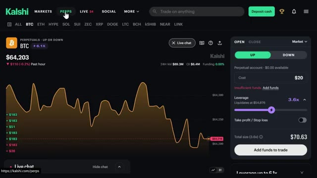
🔍 Agrandir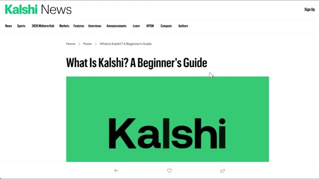
🔍 Agrandirréglementés et maintenant ils s'étendent à bien plus que de simples prédictions. Vous pouvez trader des cryptos avec effet de levier sur le même compte jusqu'à 6,1x et nous couvrons tout cela dans cette vidéo. Donc pour commencer, vous allez vouloir créer un compte. Vous pouvez vous inscrire avec Google, Apple, ou simplement votre e-mail. Le lien est juste en bas si vous voulez y aller directement. Et soit dit en passant, si vous vous inscrivez via mon lien sur les prédictions, vous obtenez un bonus pouvant aller jusqu'à 500 $ une fois que vous commencez à trader, et sur les contrats perpétuels, vous obtenez un bonus de 25 $ juste pour avoir commencé. Ça vaut donc vraiment le coup de le récupérer avant de vous lancer.
Interface & Outils : Plateforme de trading et de prédictions Kalshi (Kalshi Pro)
Contenu textuel & Code : Graphique de prix BTC PERP, carnet d'ordres (order book), options de levier, marchés de prédiction politique (Michigan Democratic Senate nominee)
Action / Démonstration : Navigation sur la plateforme, présentation de l'interface de trading perpétuel et démonstration de la création de compte utilisateur
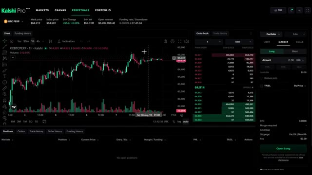
🔍 Agrandir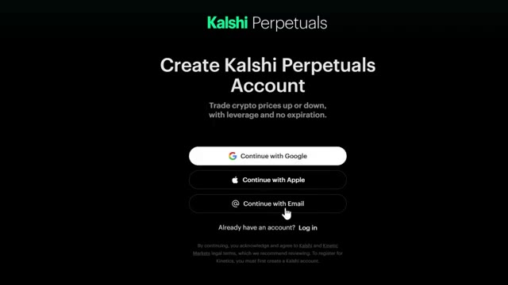
🔍 Agrandir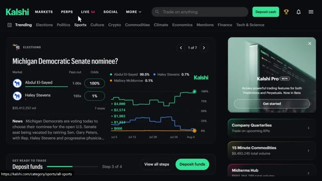
🔍 AgrandirSi vous ne voyez pas l'invite tout de suite, allez simplement en haut à droite là où il est écrit s'inscrire et vous verrez ces mêmes options. Processus assez standard. Ils vous demanderont de vérifier deux ou trois choses mais une fois que vous y êtes, vous avez fondamentalement accès à tout ce que vous voyez sur mon écran en ce moment. Très bien, alors maintenant parlons du financement de votre compte parce que c'est là que les gens s'embrouillent un peu. En haut à droite, cliquez sur ces trois lignes et allez à ajouter des fonds. C'est une façon d'y accéder. Vous pouvez aussi cliquer sur déposer des espèces directement sur la page d'accueil et vous verrez trois options de virement instantané.
Interface & Outils : Plateforme de prédiction et de trading Kalshi.
Contenu textuel & Code : Options de création de compte, marchés électoraux (Michigan Democratic Senate nominee) avec cotes et graphiques d'évolution des probabilités.
Action / Démonstration : Présentation du processus d'inscription puis navigation sur le tableau de bord des marchés de prédiction.
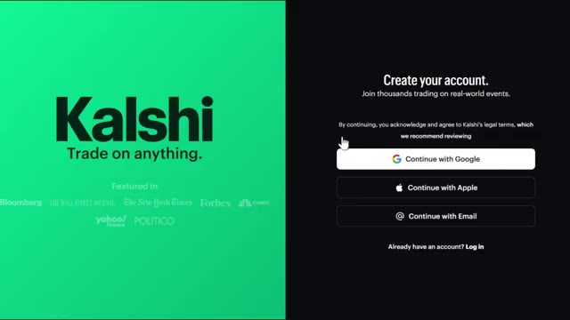
🔍 Agrandir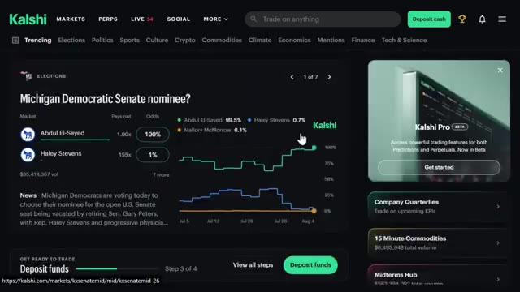
🔍 AgrandirCarte, Google Pay et crypto. Si vous cliquez sur plus d'options, vous verrez également le virement bancaire, qui prend au moins un jour ouvrable et celui-là a un minimum de 1 000 dollars, mais pas de maximum. C'est donc plutôt destiné aux personnes qui déplacent des montants plus importants. Maintenant, voici quelque chose d'important. Vous savez, si vous connectez votre carte ou Google Pay, il y a zero pour cent de frais de traitement sur ceux-là, ce qui est honnêtement génial.
Interface & Outils : Site web Kalshi (plateforme de marché de prédiction) [CONTenu] Options de dépôt : Card (marquée "Most popular"), Google Pay, Crypto, et Wire transfer ("Up to 1 business day").
Contenu textuel & Code : Explications orales des stratégies et mise en contexte méthodologique du marché.
Action / Démonstration : Un curseur de souris clique sur l'option "Wire transfer".
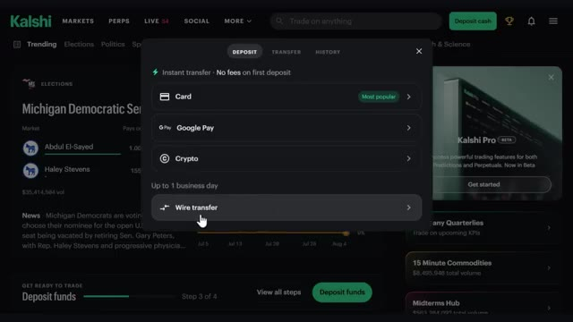
🔍 AgrandirDonc vous n'êtes pas pénalisé juste pour avoir fait un dépôt. Donc personnellement, si vous voulez l'option la plus rapide, je connecte simplement votre carte ou Google Pay directement et vous y êtes en quelques secondes. Mais si vous avez déjà des crypto-monnaies, vous pouvez aussi opter pour cette voie. Cliquez sur l'option crypto et vous verrez trois choix : dépôt sécurisé, dépôt standard, et acheter des crypto-monnaies. Sur dépôt sécurisé, vous pouvez connecter votre compte directement depuis des plateformes d'échange comme Coinbase, Uphold, Cash App, et quelques autres. Ou si vous avez des crypto-monnaies qui dorment dans un portefeuille, vous pouvez connecter Metamask, Phantom, Trust Wallet, et plus encore.
Interface & Outils : Interface de la plateforme de courtage et de prédiction Kalshi. [CONTenu] Options de dépôt : carte bancaire (marquée comme 'Most popular'), Google Pay, et crypto-monnaies, avec la mention 'Instant transfer - No fees on first deposit'.
Contenu textuel & Code : Explications orales des stratégies et mise en contexte méthodologique du marché.
Action / Démonstration : Présentation des différentes options de dépôt de fonds sur le compte utilisateur.
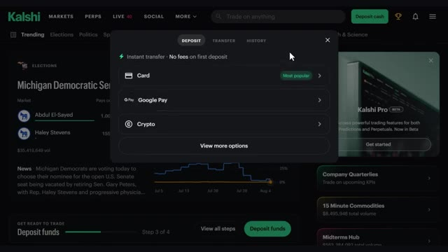
🔍 AgrandirSi votre plateforme d'échange n'est pas répertoriée, vous pouvez faire un dépôt standard à la place, tout comme un transfert de cryptomonnaie normal. Choisissez votre jeton, comme l'USDT, choisissez votre réseau, cliquez sur afficher l'adresse, copiez cette adresse et allez la coller dans votre plateforme d'échange pour l'envoyer. Gardez simplement à l'esprit qu'il y a un minimum de 3 $ sur celui-ci. Et si vous n'avez pas du tout de cryptomonnaie, vous pouvez simplement l'acheter instantanément en utilisant votre carte par l'intermédiaire de fournisseurs comme Coinbase, Cash App ou Robinhood directement dans l'application. Si vous débutez tout juste, je suggère d'avoir un dépôt maximum journalier de pas plus de 500 $, ce qui, honnêtement, est amplement suffisant pour
Interface & Outils : Kalshi (plateforme de prédiction et de trading)
Contenu textuel & Code : Menu de sélection de réseau pour le dépôt de crypto-actifs avec les différents réseaux disponibles (Tron, Arbitrum, BNB Chain, Polygon, Ethereum, Solana, Optimism) et sélection du jeton USDT.
Action / Démonstration : Sélection du réseau de transfert (clic sur le réseau Tron) pour effectuer un dépôt standard de cryptomonnaie sur la plateforme.
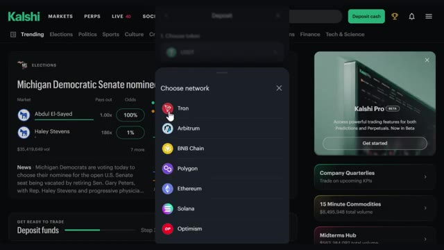
🔍 Agrandirla plupart des gens commencent. Et connecter votre carte ou votre banque rend également les retraits beaucoup plus rapides puisque cela va directement au même endroit. Maintenant qu'il est approvisionné, nous pouvons commencer à trader. La première fonctionnalité que nous allons aborder est le marché de prédiction classique. La façon dont fonctionne la prédiction Kalshi est en fait assez simple une fois qu'on le voit. Chaque marché que vous voyez ici est une question par oui ou par non, et chacun a un prix qui lui est associé. Donc par exemple, juste ici, qui sera le vainqueur du championnat Wyndham ? Nous avons différents joueurs listés, et oui signifie que ce joueur finit par remporter le tournoi. Si nous faisons défiler vers le bas, vous verrez bien d'autres marchés de ce genre. Maintenant, voici le
Interface & Outils : Kalshi (plateforme de trading de prédictions)
Contenu textuel & Code : Solde du portefeuille de 98,41 $, onglets Predictions et Perpetuals, détails du compte (solde cash, taux d'intérêt à 3.25%, niveau d'API Basic, absence de positions ouvertes).
Action / Démonstration : Présentation du compte approvisionné prêt pour le trading et vérification du solde du portefeuille.
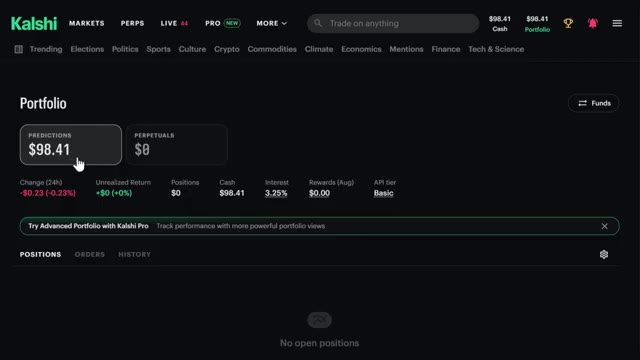
🔍 Agrandirpartie importante. Ces prix montent et descendent toute la journée en fonction de ce qui se passe réellement, et chaque contrat finit par se régler à zéro ou un dollar. C'est basé purement sur la probabilité que cet événement se produise. Donc si Cameron Young finit par gagner, ce « oui » passe de 9,9 cents jusqu'à un dollar. S'il ne gagne pas, ce même 9,9 cents tombe à zéro.
Interface & Outils : Plateforme de contrats prédictifs Kalshi.
Contenu textuel & Code : Marché « Wyndham Championship Winner » : courbe de cote de Cameron Young (9,9% / YES 9,9¢, NO 90,2¢) et Koivun (5,1%), volume total de 32 294 658 $, panneau de passage d'ordre avec sélection Buy/Sell.
Action / Démonstration : Présentation du fonctionnement des contrats à règlement binaire (0 $ ou 1 $) et de la fluctuation des prix en fonction des probabilités de victoire en temps réel.
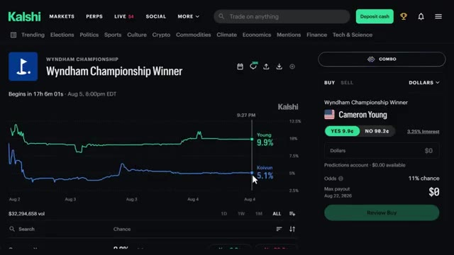
🔍 AgrandirDonc c'est un peu comme le trading d'options, sauf qu'il n'y a pas de potentiel de gain ou de perte illimité et fou. Comme quand on achète une option d'achat ou de vente. C'est plafonné à un dollar. Pire des cas, ça tombe à zéro. C'est aussi simple que ça. Et ce n'est pas seulement le golf ni même le sport en général. Vous pouvez parier sur des élections, de la politique, du sport, de la culture pop, et même sur des matières premières comme le pétrole ou l'or.
Interface & Outils : Kalshi (plateforme de marchés de prédiction)
Contenu textuel & Code : Graphiques de probabilité pour Cameron Young (9,9%) et Jackson Koivun (5,1%), cotations des contrats YES (9.9¢) / NO (90.2¢), volume total de 32 294 659 $, et panneau d'exécution d'ordre.
Action / Démonstration : Démonstration du mécanisme d'un contrat de prédiction (binaire, plafonné entre 0 et 1 dollar) appliqué à un événement sportif.
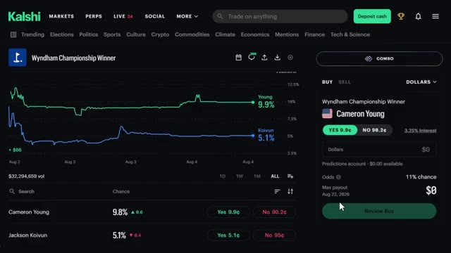
🔍 AgrandirAlors, que vous suiviez la politique de près, que vous aimiez le sport, ou que vous ayez simplement un avis bien tranché sur le fait qu'une certaine affaire de célébrité se produise ou non, il y a vraiment un marché pour presque tout ici. Maintenant, en plus de tous ces marchés d'événements, CalSheet propose aussi quelque chose qu'on appelle des « perps », et c'est spécifiquement pour la crypto. Mais le truc, c'est que ce n'achète pas du trading de crypto traditionnel où vous achetez une vraie pièce et surveillez le prix exact.
Interface & Outils : Kalshi (plateforme de marchés de prédiction et contrats perpétuels)
Contenu textuel & Code : Cotes et probabilités de prédiction (50%, 16%, 37%), cours cryptos (BTC à $64,203, ETH à $1,867.5), niveaux de levier max (6.1X, 4.8X, 3.5X), volumes sur 24h et mini-graphiques en ligne (sparklines).
Action / Démonstration : Navigation sur la plateforme Kalshi, passage de la catégorie Culture vers l'onglet des contrats perpétuels (PERPS) et consultation de la liste des paires crypto négociables.
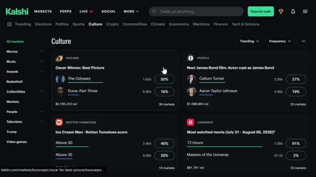
🔍 Agrandir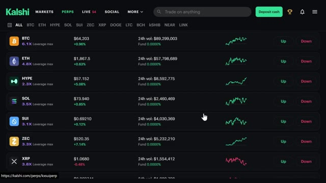
🔍 AgrandirAu lieu de cela, avec les perps, vous pariez simplement sur le fait que le prix monte ou baisse sur une période définie. C'est donc une façon binaire bien plus simple de jouer sur les mouvements de cours des cryptos sans détenir réellement l'actif ni avoir à gérer un portefeuille rempli de tokens. Nous aborderons le bonus pour cela dans une seconde, mais sachez simplement qu'il s'agit d'un produit distinct qui se trouve juste aux côtés de ces marchés de prédiction.
Interface & Outils : Kalshi (plateforme de trading de contrats perpétuels et de prédictions)
Contenu textuel & Code : Graphique de prix du BTC sur 1 heure, prix actuel de 64,203 $, options d'effet de levier (3.6x), boutons de pari "UP" ou "DOWN", et détails de la position.
Action / Démonstration : Navigation et présentation de l'interface de trading de contrats perpétuels (perps) sur la plateforme Kalshi.
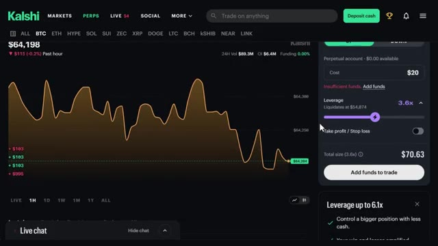
🔍 Agrandir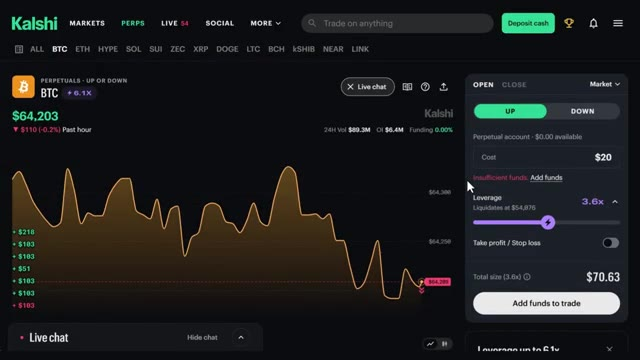
🔍 AgrandirEt honnêtement, l'un de mes aspects préférés sur la plateforme, c'est simplement de faire défiler les marchés en direct, parce qu'on peut voir les choses bouger en temps réel, peu importe ce qui vous intéresse. En ce moment même, si je fais défiler, on a le marché du candidat démocrate qui évolue activement à mesure que de nouveaux sondages sortent. On a des matchs de tennis en direct où les cotes s'actualisent littéralement point par point au fur et à mesure que le match se déroule. Le Bitcoin a un marché de prix en direct qui bouge toutes les quelques minutes.
Interface & Outils : Site web / plateforme de marché de prédictions Kalshi.
Contenu textuel & Code : Marchés en direct affichés : "MI-13 Democratic nominee?" (Donavan McKinney à 91%, Shri Thanedar à 7%, volume de $3,119,168) et "BTC 15 min - $64,248.85 target" (Down 96%, Up 4%). Interface de passage d'ordre sur la droite pour acheter/vendre des contrats ("YES 91.5¢", "NO 9.9¢").
Action / Démonstration : Démonstration de la navigation sur le flux en direct (section LIVE) de Kalshi pour consulter l'évolution en temps réel des cote et probabilités des marchés de prédiction.
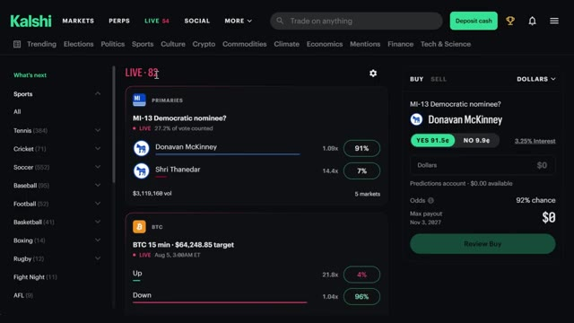
🔍 AgrandirIl y a des matchs de cricket en direct en ce moment avec des cotes qui oscillent à chaque série de six lancers, et ce n'est que la surface. Il y a des trucs sur le cycle de l'actualité, des cérémonies de remise de prix, même des événements météorologiques qui se produisent en temps réel aussi. Donc vraiment, peu importe ce qui se passe dans le monde en ce moment, il y a de fortes chances pour que CalSh ait déjà un marché en direct qui suit cela, et vous pouvez simplement vous lancer et regarder les cotes bouger au fur et à mesure que ça se produit. Maintenant, CalShe a aussi un côté social, ce qui, je pense, est plutôt sous-estimé. Il y a toute une section où vous pouvez réellement publier vos transactions et voir ce que les autres échangent et quelles sont leurs opinions sur la direction que prend un marché. Donc c'est un peu
Interface & Outils : Plateforme de prédiction et de paris Kalshi.
Contenu textuel & Code : Cotes en temps réel, volumes de transactions, probabilités et graphiques d'évolution des marchés de prédiction (sports et actualités politiques).
Action / Démonstration : Navigation et présentation des différents marchés de prédiction disponibles sur la plateforme Kalshi.
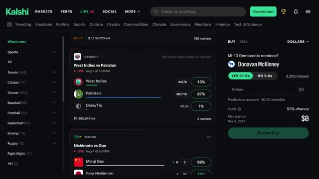
🔍 Agrandircomme un fil communautaire intégré. Vous pouvez le faire défiler, voir l'avis de quelqu'un sur la raison pour laquelle il pense qu'un certain résultat va se réaliser, être d'accord ou pas d'accord avec cela, et honnêtement, c'est un bon moyen de repérer des choses auxquelles vous n'auriez peut-être pas pensé vous-même avant de placer un trade. Si vous cliquez sur « plus » dans le menu, c'est là que vous trouverez les politiques de Calci, les valeurs de leur entreprise, ainsi qu'un ensemble d'outils de recherche. Donc, si vous souhaitez un jour approfondir la manière dont la plateforme fonctionne réellement, leurs conditions d'utilisation, ou simplement consulter des recherches pour appuyer un trade que vous envisagez de faire, tout se trouve juste là dans cet onglet. Il y a aussi Calci Pro, qui est un cran au-dessus de la version standard. Avec
Interface & Outils : Plateforme de marchés de prédiction Kalshi (interface web du fil social et page de politique).
Contenu textuel & Code : Publications d'utilisateurs avec paris « Yes / No », options de trading, et pourcentages de sondages sur la régulation des marchés (89%, 79%, Bipartisan Support).
Action / Démonstration : Navigation et défilement sur le fil communautaire de la plateforme Kalshi pour illustrer les fonctionnalités sociales du site.
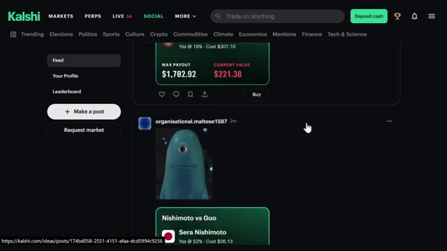
🔍 Agrandirpro vous obtenez accès à beaucoup plus de données et d'outils que le compte standard ne vous montre tout simplement pas des choses comme le volume, le spread, la taille des positions, le moment où un événement a réellement commencé et un tas d'autres métriques que les traders sérieux vont vouloir s'ils gèrent des positions plus importantes ou essaient de chronométrer leurs entrées plus précisément donc si vous vous trouvez à trader beaucoup et à vouloir plus de visibilité sur ce qui se passe réellement sous le capot d'un marché c'est là que pro entre en jeu donc disons que vous cliquez sur l'un des marchés ici au lieu du simple achat et de la vente que vous obtenez sur le normal
Interface & Outils : Kalshi Pro (version bêta)
Contenu textuel & Code : Tableaux de données de marché incluant le volume sur 24h, le volume sur 5m, le spread, la taille des positions et les horodatages des événements.
Action / Démonstration : Présentation des fonctionnalités professionnelles et des métriques détaillées disponibles sur la plateforme Kalshi Pro.
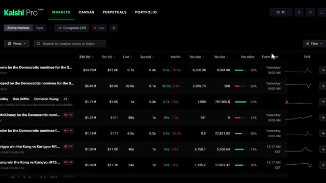
🔍 Agrandirversion pro, vous en voyez beaucoup plus, vous avez le carnet d'ordres complet, les volumes, les noms, l'expiration, tout est affiché juste là. C'est une vue beaucoup plus détaillée pour quiconque essaie vraiment de trader sérieusement. Maintenant, l'autre chose qui change par rapport au compte standard de Cash App, c'est qu'avec la version pro, vous pouvez réellement trader des crypto-monnaies comme sur un échange de crypto traditionnel, avec de vrais chiffres, et pas seulement avec des hausses ou des baisses comme les contrats perpetuals sur le compte classique. Ici, vous pouvez voir le sélecteur de paires, un graphique TradingView complet, le carnet d'ordres, le panneau d'ordres, et vos positions juste ici en bas.
Interface & Outils : Kalshi Pro (plateforme de trading et marchés de prédiction)
Contenu textuel & Code : Carnets d'ordres complets, volumes, prix d'actifs, taux de financement, expiration des contrats et graphiques de prix en temps réel.
Action / Démonstration : Présentation des fonctionnalités professionnelles de la plateforme de trading Kalshi Pro.
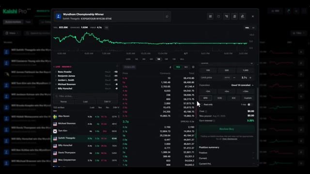
🔍 Agrandir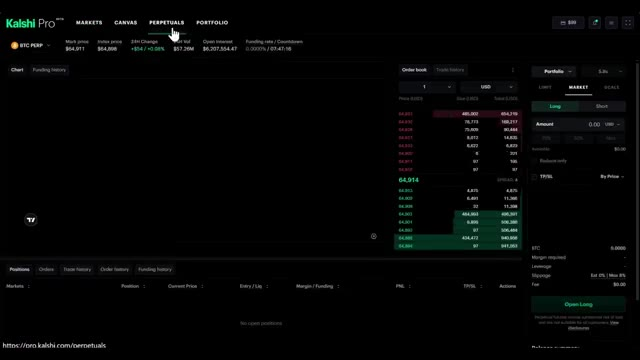
🔍 Agrandir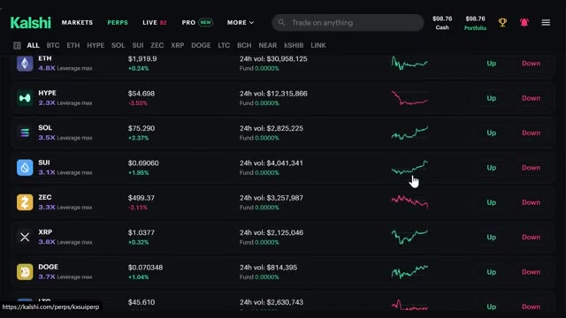
🔍 Agrandiren bas. Fondamentalement, un terminal de trading complet et lorsque vous allez dans votre portefeuille ici, vous pouvez voir toutes vos positions en un seul endroit et vous pouvez facilement basculer entre les prédictions et les perpetuals directement depuis ce même écran. Encore une fois, étant donné que c'est toujours en version bêta, attendez-vous à ce que certaines choses évoluent, mais nous entrerons plus en détail sur CalSharks Pro dans nos prochaines vidéos.
Interface & Outils : Kalshi Pro (plateforme de trading et de prédiction)
Contenu textuel & Code : Menu de navigation supérieur avec les sections Markets, Canvas, Perpetuals, Portfolio, et les sous-onglets Predictions et Perpetuals.
Action / Démonstration : Navigation vers l'onglet Portfolio pour afficher l'ensemble des positions en un seul endroit.
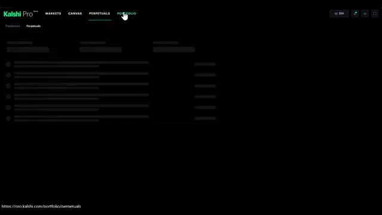
🔍 AgrandirAlors restez à l'écoute pour cela et assurez-vous de vous abonner pour ne pas le manquer. Petite note avant d'aller plus loin, CalShe est légal au niveau fédéral et disponible dans la plupart des États. Mais à l'heure actuelle, c'est restreint dans une poignée d'États comme l'Arizona, l'Illinois, le Massachusetts, le Michigan, le Nevada, le New Jersey et quelques autres. Cette liste change en fait assez souvent au fur et à mesure que les régulateurs s'affrontent sur ce sujet.
Interface & Outils : Navigateur web affichant le site d'information de Kalshi (Kalshi News).
Contenu textuel & Code : Texte juridique et explicatif sur la structure réglementaire de Kalshi, sa régulation fédérale par la CFTC et sa distinction avec les paris sportifs.
Action / Démonstration : Navigation et lecture d'un article expliquant le statut juridique fédéral de Kalshi face aux lois des différents États.
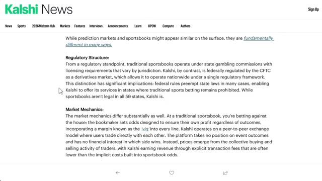
🔍 Agrandir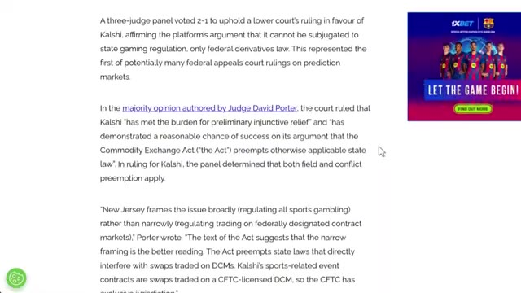
🔍 AgrandirDonc, vérifiez bien deux fois quand vous vous inscrivez. Ils feront en sorte que ce soit évident dans les deux cas. Alors, regardons vraiment un vrai marché, le vainqueur du championnat Wyndham. Cliquons dessus. Sur la gauche, vous verrez tous les ordres qui défilent, et en faisant défiler le graphique, vous pouvez littéralement regarder la probabilité bouger en temps réel pour différents joueurs. En ce moment, nous avons Young, Koivun et Matsuyama qui apparaissent ici.
Interface & Outils : Plateforme de prédictions Kalshi (kalshi.com).
Contenu textuel & Code : Graphiques de probabilités pour le vainqueur du tournoi de golf Wyndham Championship (Cameron Young à 9,9 %, Jackson Koivun à 5,1 %), volumes de transactions et carnets d'ordres d'achat/vente.
Action / Démonstration : Recherche d'un marché spécifique (« Wyndham Championship Winner ») et navigation vers sa page détaillée pour analyser les cotes et les graphiques de prix.
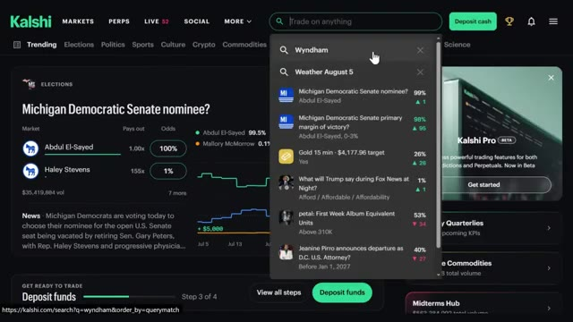
🔍 Agrandir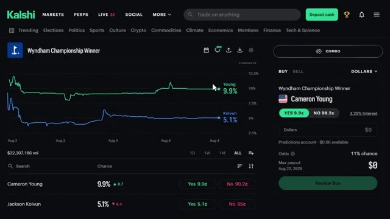
🔍 AgrandirCes gars n'ont pas encore tapé leur premier coup quand je filme ceci, donc c'est plutôt calme en ce moment. Mais une fois que le jeu commencera, ça va bouger beaucoup. Si vous regardez la semaine dernière, vous pouvez voir Koivun monter, puis redescendre. Tout cela reflète exactement ce qui se passe en direct sur le parcours. Il y a aussi une petite fonctionnalité de chat en haut où les gens lancent des idées, ainsi qu'un fil d'activité où vous pouvez réellement voir ce que font les autres traders.
Interface & Outils : Kalshi (plateforme de marchés prédictifs)
Contenu textuel & Code : Graphiques de probabilité temporels affichant les courbes de Cameron Young (9,1% puis 9,9%) et Jackson Koivun (4,7%), ainsi que le carnet de commandes/panneau de transaction à droite pour Cameron Young (YES à 9,9¢, NO à 90,2¢) et un volume global de 32 308 077 $.
Action / Démonstration : Navigation et consultation des graphiques et des cotes des différents participants au tournoi de golf sur Kalshi.
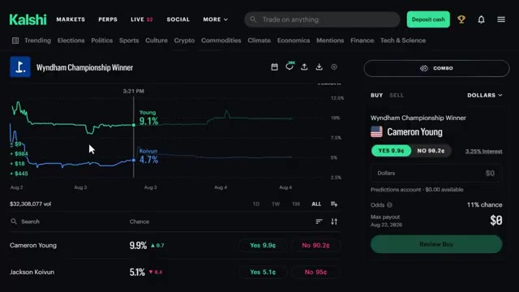
🔍 AgrandirVous pouvez définir un minimum, alors j'ai augmenté le mien à 10 000 $ juste pour voir les gros joueurs. Et la plus grande partie de ce qui s'y passe, ce sont des gens qui vendent des « non » à environ 90,2 cents, prenant un petit pourcentage de rendement mais sur un montant de capital énorme. Très bien, voyons exactement comment cela fonctionne. Donc nous sommes toujours sur le marché du vainqueur du championnat Wyndham, et j'ai Cameron Young affiché juste ici.
Interface & Outils : Kalshi (plateforme de marché de prédiction)
Contenu textuel & Code : Contrats de prédiction pour le Wyndham Championship Winner avec les options « YES 9.9¢ » et « NO 90.2¢ », et des transactions affichant des volumes importants (ex: 25 000 contrats à 99.9¢, 15 000 à 99.7¢, 33 500 à 97.9¢ et 22 425.04 à 90.1¢).
Action / Démonstration : Navigation et consultation des transactions de gros volumes sur les options « Non » pour différents participants du marché de prédiction.
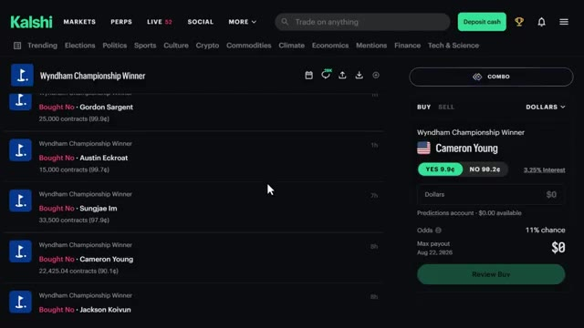
🔍 AgrandirIl s'échange à 9,9 cents, ce qui lui donne 9,9 % de chances de gagner. Si vous regardez le graphique en haut, vous pouvez voir que sa courbe monte ces derniers jours pour atteindre environ cette fourchette de 10 % maintenant, tandis que Jackson Koivin se situe à 5 %. Cela vous donne donc un bon aperçu visuel de la façon dont ces probabilités évoluent en temps réel au fil du tournoi. Maintenant, sur le côté droit, voici le panneau des ordres. Vous avez deux onglets en haut, acheter et vendre, et je l'ai configuré en dollars en ce moment au lieu des contrats.
Interface & Outils : Kalshi (plateforme de marché de prédiction)
Contenu textuel & Code : Graphique de probabilité montrant Cameron Young à 10 % (9,9 cents) et Jackson Koivun à 5 %, volume total de 32 308 134 $.
Action / Démonstration : Analyse des cotes et des graphiques de probabilité des différents candidats pour le tournoi de golf.
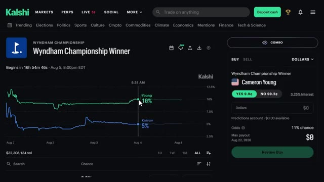
🔍 AgrandirEn dessous de ça, vous pouvez voir le marché. Vainqueur du championnat Wyndham, Cameron Young, puis deux boutons, oui à 9,9 cents et non à 90,2 cents. Maintenant, gardez à l'esprit que ce chiffre n'est pas fixe. Il va évoluer au fur et à mesure que les cotes changent sur ce dans quoi vous avez pris position. Et au passage, vous gagnez en fait des intérêts sur votre argent disponible qui se trouve là. En ce moment, c'est 3,25 %, ce qui est un petit bonus sympa juste pour avoir des fonds déposés sur la plateforme. Cliquons sur oui, car je pense que Cameron Young a une chance ici. Je vais saisir un montant dans le champ des dollars. Faisons les choses en grand pour cet exemple.
Interface & Outils : Plateforme de prédiction / trading Kalshi (interface web).
Contenu textuel & Code : Graphique de suivi des probabilités pour les joueurs (Cameron Young à 9,9%, Koivun à 5,1%), volume de transactions de $32,308,166, et panneau de passe d'ordre avec les boutons "YES 9.9¢" et "NO 90.2¢".
Action / Démonstration : Explication du fonctionnement des contrats de marché de prédiction, observation des variations de cotes et pointage sur le bouton "NO" à 90.2 cents.
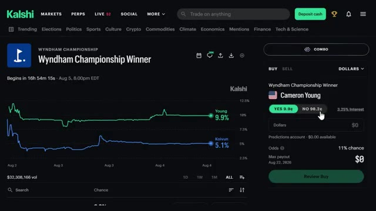
🔍 Agrandiret disons 10 000 dollars, juste pour que vous puissiez voir comment les chiffres évoluent. Juste ici sur la droite, cela détaille le trade pour moi. Les cotes montrent une chance de 11 % et puis le grand chiffre, le paiement maximum. Si cela se réalise d'ici l'expiration du marché le 22 août 2026, mon paiement serait de 95 017,27 dollars.
Interface & Outils : Kalshi (plateforme web de marchés de prédiction)
Contenu textuel & Code : Marché "Wyndham Championship Winner", sélection Cameron Young (contrat YES à 9.9¢), montant saisi de 10 000 $, cotes calculées à 11 % de chance, paiement potentiel maximal de 95 017,27 $, graphique comparatif des probabilités (Young à 9,9 %, Koivun à 5,1 %).
Action / Démonstration : Simulation de saisie d'un ordre d'achat pour illustrer le calcul du paiement maximum et des probabilités affichées par la plateforme.
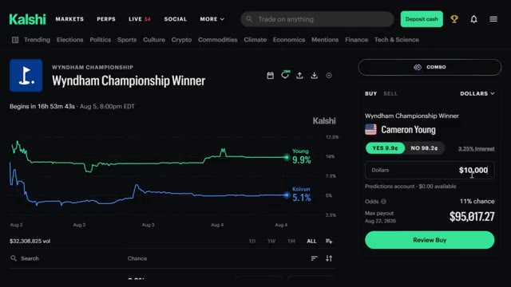
🔍 AgrandirDonc, cela transforme 10 000 $ en pratiquement 95 000 $ si Cameron Young gagne ce tournoi. Une fois que tout semble correct, je clique simplement sur « Review Buy » tout en bas. Cela affichera un écran de confirmation montrant tout une fois de plus. Et une fois que vous confirmez, vous êtes dans le trade. Évidemment, vous n'êtes pas obligé d'y aller aussi fort.
Interface & Outils : Kalshi (plateforme de prédictions et marchés financiers)
Contenu textuel & Code : Sélection de Cameron Young (YES à 9.9¢), montant saisi de 10 000 $, paiement maximum estimé à 95 017,27 $, et bouton « Review Buy ».
Action / Démonstration : Configuration d'un ordre d'achat de 10 000 $ sur la victoire de Cameron Young avant de cliquer sur « Review Buy ».
Vous pouvez saisir 10 $, 50 $, peu importe ce qui convient à votre capital, et la case des gains se met à jour instantanément, vous savez donc toujours exactement ce que vous risquez et ce que vous pouvez gagner avant même d'appuyer sur ce bouton. Maintenant, disons que Cameron Young a fait un excellent tour, et je veux sécuriser du profit sans attendre que tout le tournoi se termine. Je retourne donc sur le marché, et cette fois, au lieu de cliquer sur acheter en haut, je clique sur l'onglet vendre. Une fois que tout semble bon, je clique sur examiner la vente, et c'est vraiment la beauté de la chose. Vous n'êtes pas bloqué jusqu'à la résolution. Si
Interface & Outils : Kalshi (plateforme de marchés de prédiction)
Contenu textuel & Code : Graphique de probabilité temporelle (Cameron Young à 9,9 %, Koivun à 5,1 %), panneau de passage d'ordre pour Cameron Young avec options YES (9.9¢) / NO (90.2¢), champ de saisie du montant en dollars, cotes (11% chance) et gain maximal potentiel (Max payout).
Action / Démonstration : Présentation de l'interface Kalshi expliquant comment saisir un montant pour visualiser instantanément le risque et le gain potentiel avant de valider l'achat.
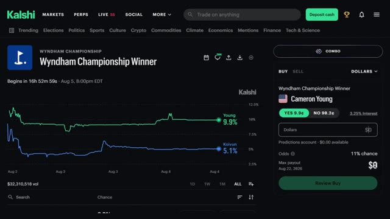
🔍 Agrandirles cotes tournent en votre faveur dès le début, vous pouvez simplement encaisser la victoire directement et passer au trade suivant. Pas besoin d'attendre que le tournoi se termine vraiment. Maintenant, disons que vous avez plusieurs paris en cours en même temps et que vous vous demandez où vous pouvez réellement tout voir au même endroit. Super simple. Cliquez simplement ici sur votre portefeuille en haut à droite et vous pouvez littéralement tout voir ici.
Interface & Outils : Kalshi (plateforme de trading d'événements et de marchés de prédiction).
Contenu textuel & Code : Marchés de prédiction sportifs (Wyndham Championship, LIV Golf, Ryder Cup 2027), règles d'évaluation des contrats (Market Rules), cotes en temps réel, pourcentages de probabilité, solde du portefeuille ($98.64 Portfolio).
Action / Démonstration : Navigation sur la plateforme Kalshi, consultation des marchés actifs et affichage des règles de résolution des contrats pour la clôture des positions.
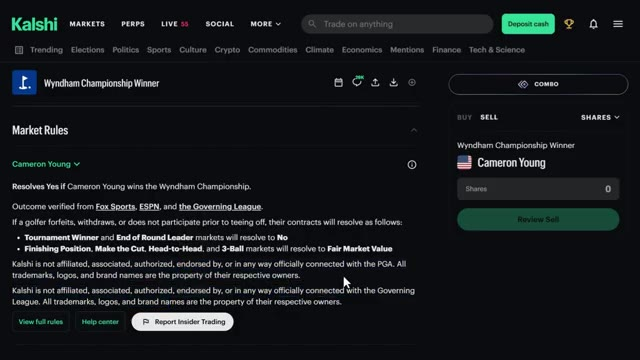
🔍 Agrandir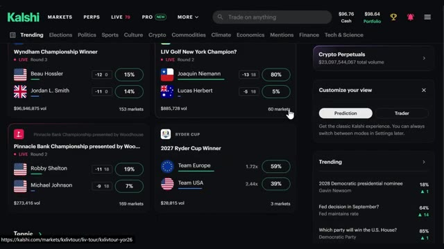
🔍 Agrandirvotre valeur totale, le changement sur les dernières 24 heures, votre rendement non réalisé, la valeur de votre position, votre solde de liquidités plus vos intérêts et toutes les récompenses que vous avez récoltées en chemin. Si vous faites défiler vers le bas à partir d'ici, vous verrez toutes vos positions individuelles listées, et si vous cliquez sur l'une d'entre elles, cela vous amène directement sur la page de ce marché où vous pouvez soit renforcer votre position, soit la vendre, exactement comme nous venons de le voir. Donc, en réalité, votre page de portefeuille est votre base de référence. Tout ce que vous suivez est sur un seul écran et vous n'êtes qu'à un clic de gérer n'importe quoi
Interface & Outils : Kalshi (plateforme de prédiction et de trading)
Contenu textuel & Code : Valeur totale du portefeuille ($98.64), changement sur 24h (-$0.12, -0.12%), rendement non réalisé ($0, +0%), valeur des positions ($1.88), solde de liquidités ($96.76), taux d'intérêt (3.25%), récompenses ($0.00), niveau API (Basic).
Action / Démonstration : Navigation et présentation des différentes métriques et soldes du compte utilisateur.
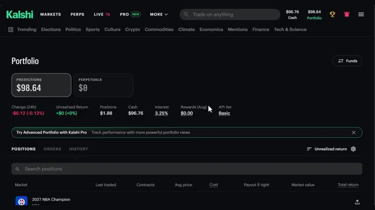
🔍 Agrandirseul trade. Très bien, maintenant parlons des frais parce que c'est honnêtement la partie que Cash App ne rend pas super évidente. Il faut pour ainsi dire creuser un peu. Faites défiler tout en bas de la page d'accueil, cliquez sur la grille tarifaire et vous verrez une fourchette qui a l'honnêteté de paraître confuse au début. Voici donc la version simple. Il y a des frais de maker et des frais de taker. Les frais de maker sont pour les ordres en attente, ce qui signifie que vous aidez le marché donc vous payez moins. Les frais de taker sont pour les ordres de marché. Vous voulez entrer tout de suite donc vous payez un peu plus. Le maximum que vous payerez the and never is d'environ 1,75 centime par contrat et le moins cher
Interface & Outils : Site web de Kalshi (Interface de courtier / plateforme de prédiction).
Contenu textuel & Code : Menus du pied de page incluant Product, Company et Help (avec l'option "Fee schedule" visible dans la colonne Help).
Action / Démonstration : Navigation sur le site pour localiser la grille des frais tarifaires depuis le pied de page de la plateforme.
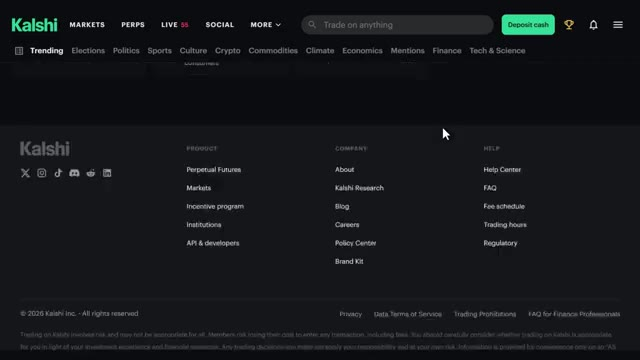
🔍 Agrandirles transactions ne coûtent presque rien. En gros, les marchés qui affichent des probabilités de 50-50 coûtent le plus cher en frais parce que c'est l'issue la plus incertaine. Mais quelque chose comme un grand favori à 90 % dans un match sportif ? ces frais tombent à moins d'un centime. Les ordres au marché coûtent environ quatre fois plus cher que les ordres à cours limité, alors gardez cela à l'esprit. À part ça, pas de frais de règlement, pas de frais d'adhésion, les dépôts ACH et les retraits sont gratuits. Les cartes de débit peuvent vous coûter jusqu'à deux pour cent, alors soyez simplement vigilants selon la façon approvisionnez votre compte.
Interface & Outils : Site web Kalshi (plateforme de prédiction et de marchés financiers).
Contenu textuel & Code : Tableau listant différentes séries de marchés (US gas price, ATP Tennis Match, Ballon d'Or, prix du Bitcoin, etc.) avec les colonnes "maker fees", "multiplier" et "Fee range (100 contracts)" affichant des montants en dollars (ex: $0.07 - $1.75).
Action / Démonstration : Navigation et présentation des grilles de frais par le présentateur sur la plateforme Kalshi.
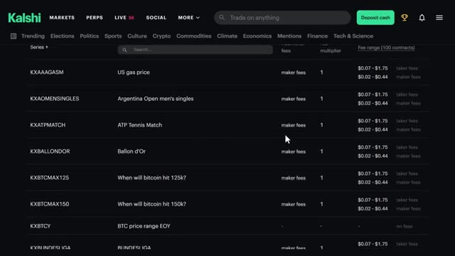
🔍 AgrandirAlors, par où devriez-vous réellement commencer ? Honnêtement, commencez par ce que vous savez déjà. Kalshi propose des milliers de marchés, donc si vous suivez de près le sport, commencez par là. Si vous aimez les actions, ils ont même des marchés sur le prix du Bitcoin ou le S&P 500 à une certaine échéance. Commencez simplement petit, 5, 10, peut-être 100 contrats. Familiarisez-vous avec la plateforme, puis augmentez la mise une fois que vous savez ce que vous faites.
Interface & Outils : Plateforme de prédiction et de trading Kalshi (site web).
Contenu textuel & Code : Catégories de marchés (Trending, Politics, Sports, Crypto, Economics, Finance), graphiques de probabilités, cours des cryptomonnaies (Bitcoin à 64,189 $, Ethereum, Solana, Sui) et sections de trading perpétuel.
Action / Démonstration : Navigation à travers les différentes catégories de marchés de la plateforme Kalshi pour illustrer la diversité des options de trading disponibles.
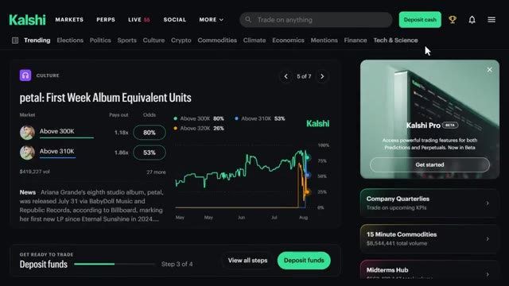
🔍 Agrandir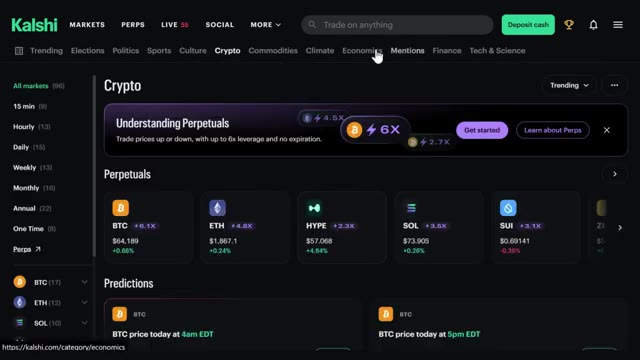
🔍 AgrandirAssurez-vous d'utiliser le lien d'inscription en bas dans la description si vous voulez commencer. En plus, rappelez-vous de ce bonus, jusqu'à 500 dollars sur les prédictions, 25 dollars sur les contrats perpétuels juste pour vous lancer. Dites-moi dans les commentaires quels marchés vous prévoyez de trader et si vous avez des questions sur la façon dont tout cela fonctionne. J'ai vraiment l'intention d'aller beaucoup plus en profondeur là-dessus au cours des prochaines vidéos.
Interface & Outils : Site web de la plateforme de prédiction Kalshi (Kalshi Perpetuals).
Contenu textuel & Code : Options de connexion (Google, Apple, Email) et divers marchés de prédiction politique avec volumes, multiplicateurs et pourcentages (ex: détroit d'Ormuz, extraterrestres, procureur général).
Action / Démonstration : Présentation des étapes de création de compte et navigation à travers les différentes catégories de marchés de prédiction de la plateforme.
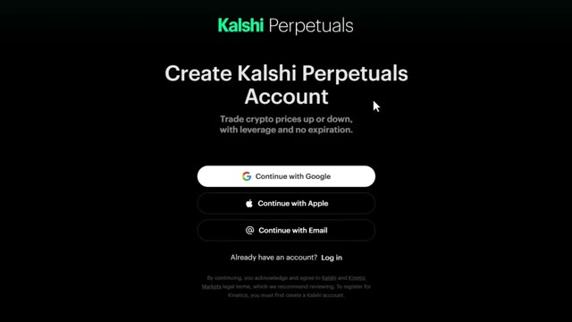
🔍 Agrandir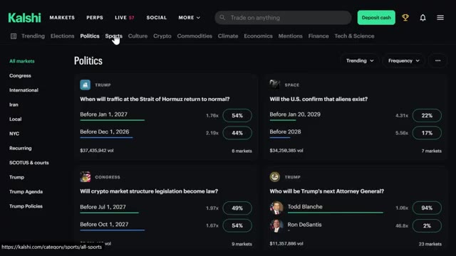
🔍 AgrandirDes choses comme la mise en place d'automatisations et de stratégies de suivi sur CalSHE. Alors restez à l'écoute pour ça. Et si vous voulez le guide étape par étape complet sur la façon de construire votre propre système de trading agentique en utilisant Claude, cette vidéo apparaît également à l'écran. Allez y jeter un œil ensuite. Si vous avez trouvé cela utile, laissez un pouce bleu. Cela aide vraiment la chaîne. Abonnez-vous si ce n'est pas déjà fait, et je vous vois dans la prochaine.
Interface & Outils : Aucun élément d'interface affiché.
Contenu textuel & Code : Aucun contenu, code ou graphique visible.
Action / Démonstration : Aucune action démontrée à l'écran.